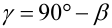

|
|
|


分度圆直径处的导程角
蜗杆（齿轮 1）中分度圆上的导程角是螺旋角的余角，根据式 17.1 计算。导程方向（见图 17.3）。
|  | (17.1) |
单击换算按钮打开 对话框窗口，您可以在其中根据其他齿轮值计算导程角。此处提供以下选项：、 以及 2 被修改）。较大的导程角可产生更高的效率，而使用较小的导程角可实现自锁轮齿。
Lead angle at reference diameter
The lead angle on the reference circle in a worm (gear 1) is the complement of the helix angle and is calculated according to equation 17.1. Lead direction (see Figure 17.3).
| (17.1) |
Click the Convert button to open the dialog window, in which you can calculate the lead angle from other gear values. These options are available here: , and 2 is modified). A larger lead angle produces greater efficiency, whereas you can create self-locking toothing if you use a smaller lead angle.